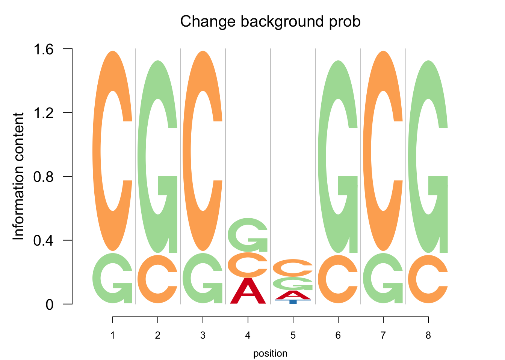

One of the first applications of logo plots have been in visualization of DNA sequence motifs (e.g.: seqLogo). These logo plots consist of symbol logos for four letters(A,C,G and T) corresponding to the four nucleotides(Adenine, Cytosine, Guanine, Thymine). We start with an example application of seqLogo in representing DNA sequence motifs using A, C, G and T. Then we show, even with this specific set of symbols, Logolas offers way more options to the user for building the logo plot representations.
We use the same example PWM as in seqLogo.
mFile <- system.file("Exfiles/pwm1", package="seqLogo")
m <- read.table(mFile)
p <- seqLogo::makePWM(m)
seqLogo::seqLogo(p)
The logomaker() function in Logolas is an improved and more flexible alternative to the seqLogo() function for visual representation of the position weight matrix(PWM).
As evident from the above example, logomaker offers the user several options to stylize the logo plots. Some of them are
color_profile : This option allows the user to specify the color patterns for the different symbols. This is a list argument with a type variable and the color variable. The type variable depicts the coloring scheme to be used, and can be one of three choices - per_row, per_symbol and per_column depending on whether the user wants to fix a color for a specific row name of the PWM matrix, or for each column or for a specific alphanumeric symbol. We shall provide example usages of all the options later in other chapters of the vignettes.
frame_width : Determines the width of the position to be used for the logo plot. Default is set to 1 usually.
ic.scale : If TRUE (which is also the default), Information Criterion (I.C) is used to determine the heights of the logo symbols in the logo plot. The most standard entropy measure for determining the IC is the Shannon entropy, which is also the default entropy measure in Logolas.
Information Criterion and Background Probabilities
The information content for position \(i\) is \(IC_i=-\Sigma_b p_{b, i}\times \log_2p_{b, i}-(-\Sigma_b q_{b,i}\times \log_2q_{b,i})\), where \(q_{b,i}\) is the relative frequency of base \(b\) at position \(i\) and \(p_{b, i}\) is the background probability of base \(b\) and position \(i\). For many examples, we usually have \(p_{b,i}= p_{b}\) for each position. Logolas allows the user to fix a background probability bg as input. bg can be a matrix, vector or NULL. When bg is a matrix, each position has a specific base probabilities \(p_{b,i}\), if bg is a vector, it is assumed that \(p_{b,i} = p_{b}\) for all \(i\), and if NULL, the background probability is assumed to be same for all the bases. For example, for the DNA motif data, it would correspond to \(p_{b,i} = 0.25\).
We present examples of Logolas with different options for bg. We plot here a multi-panel Logolas plot for different choices of bg.
[A FIGURE GOES HERE]
Plotting Options in Logolas
Logolas also allows the user to choose different colors, change the scale of the Y axis, normalize the height of the logos and also play around with the margins of the plot in the plotting region. Besides, Logolas also allows the user to choose the labels and the title, along with their font sizes and spacings.
library(grid)
grid.newpage()
layout.rows <- 2
layout.cols <- 2
top.vp <- viewport(layout=grid.layout(layout.rows, layout.cols,
widths=unit(rep(5,layout.cols), rep("null", 2)),
heights=unit(rep(5,layout.rows), rep("null", 1))))
plot_reg <- vpList()
l <- 1
for(i in 1:layout.rows){
for(j in 1:layout.cols){
plot_reg[[l]] <- viewport(layout.pos.col = j, layout.pos.row = i, name = paste0("plotlogo", l))
l <- l+1
}
}
plot_tree <- vpTree(top.vp, plot_reg)
pushViewport(plot_tree)
#change the color of letters
#change the diverging palettes
color_profile1=list("type" = "per_row",
"col" = RColorBrewer::brewer.pal(dim(p@pwm)[1],name ="PiYG"))
seekViewport(paste0("plotlogo", 1))
logomaker(p@pwm,xlab = 'position',color_profile = color_profile1,
frame_width = 1,
newpage = FALSE,
pop_name = 'Change color',
control = list(viewport.margin.left = 5))
#change the y scale:
#if yscale_change = FALSE, then the height of y axis would be 2.
seekViewport(paste0("plotlogo", 2))
logomaker(p@pwm,xlab = 'position',color_profile = color_profile,
frame_width = 1,
newpage = FALSE,
pop_name = 'Change y scale',
yscale_change = FALSE,
control = list(viewport.margin.left = 5))
#Normalize the height of bars to 1
seekViewport(paste0("plotlogo", 3))
logomaker(p@pwm,xlab = 'position',color_profile = color_profile,
frame_width = 1,
newpage = FALSE,
ic.scale = FALSE,
pop_name = 'Normalize the height',
control = list(viewport.margin.left = 5))
#change the background probability
#And modify the title and the axis label
seekViewport(paste0("plotlogo", 4))
logomaker(p@pwm,xlab = 'position',color_profile = color_profile,
frame_width = 1,
bg=c(0.32, 0.18, 0.2, 0.3),
newpage = FALSE,
pop_name = 'Change background prob',
control = list(viewport.margin.left = 5))

Other entropy measures
Besides the default Shannon entropy, logomaker can also determine the Information Criterion using Renyi entropy. For this entropy measure, the Information content at position \(i\) is \(IC_{i,\alpha}=\frac{1}{1-\alpha}\Sigma_b\log_2(q_{b,i}^\alpha-0.25^{1-\alpha})\). When \(\alpha\rightarrow1\), the limiting value of Renyi entropy is the Shannon entropy. In logomaker, alpha is a control parameter that can be tuned to get plots for different entropy measures. The figure below shows the logo plots with different values of \(\alpha\).
In the above logo plot representation, we highlight the enrichment of symbols. But sometimes, highlighting enrichment along with depletion leads to a more parsimonious logo plot representation. For examples, suppose for a particular position \(i\), the base composition of $ (A, C, G, T )$ is as follows
Then the logo plot above would highlight \(A, C, T\) for that position. Also, the information content would be lower compared to an enrichment of a single symbol. But, a more ideal representation would be to show the depletion of \(G\) instead. We propose a negative logo plot representation to demonstrate this.
In these plots, we show enrichment above the zero on the Y-axis and depletion is shown below the zero on the Y-axis. The size of the logo on the positive or negative scale is proportional to how strong the enrichment or depletion is.
We use nlogomaker function in Logolas to perform these negative Logolas plots. There are three different options for determining the logo heights: information content, log probability and log-odds.
The negative Logolas plot shows the relative change of base frequencies at a each position. To achieve this, the median of base frequencies is subtracted at a position. For example, assume that the relative frequencies at a position is \(P=(0.7,0.15,0.15,0)\). We obtain median adjusted values to be used for determining the heights of the logos in the logo using the following algorithms for each option.
Algorithm for nlogomaker height detection
Following are the steps to determine the heights of the logos for log based approach.
Let $ q_{*,i} = ((q_{b, i} )) $ be the relative frequency vector of bases at position \(i\) and \(p\) be the background probabiltiy vector.
Take $ log_2 $ of $ (q_i + )/(p+) $ where $ $ is a small number (default 0.01) meant to prevent log (0) type errors.
Determine $ f^{+}{i} = max (f_i, 0) $ and $ f^{-}{i} = max(-f_i, 0) $.
For the log or the log_odds approaches, $ f^{+}{i} $ scores are plotted on the positive Y axis for the \(i\) th position, whereas $ f^{-}{i} $ scores are plotted along the negative Y axis for the same position.
For the ic approach, we also calculate the IC measure for the \(i\)th measure as in the positive Logolas plot using Shannon entropy or some Renyi entropy measure.
Normalize both $ f^{+}{i} $ and $ f^{-}{i} $ so that each sums up to 1.
The $ IC^{+}{i} $ scores are plotted on the positive Y axis for the \(i\) th position, whereas the $ IC^{-}{i} $ scores are plotted along the negative Y axis for the same position.
Below we show the negative Logolas plot using ic, log and log-odds heights for the same example as above, along with the positive Logolas plot.
As seen from the above figures, the negative Logolas plot presents both the enrichment and depletion while the positive Logolas highlights only enrichment. For example, there is an obvious depletion of T at the position 4. When one looks at the positive Logolas plot, that position does not seem interesting. But the negative Logolas plot clearly highlights the T depletion and hence proves its worth.
Depletion weights
Logolas further allow users to customize the weight of depletion. The option depletion_weight is the weighting attached on top of the nlogomaker scaling rules for logo height detection (see the 3 algorithms above), that highlights the depletion more clearly. The default choice of depletion_weight is \(0\), which means the depletion is solely determined by the above rules. However with the depletion weight increasing, the depletion (as well as the enrichment) would look more prominent. Here we show nlogomaker plots for the same PWM with the depletion_weights chosen to be 0 (default), 0.3, 0.5, 1.
Logolas allows the user to customize the border and fill of the logos and also have separate border and fill rules for the enrichment and depletion of logos. The figure below shows the various options of choosing border and fill for making the logos.